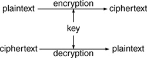
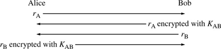

Networking Security Networking Security Networking Security Security Networking Security Networking Security Networking Charlie Kaufman Radia Perlman Mike Speciner Prentice Hall Network Security: Private Communication in a Public World, Second Edition
2.4. Secret Key Cryptography
Secret key cryptography involves the use of a single key. Given a message (called plaintext) and the key, encryption produces unintelligible data (called an IRS PublicationÂno! no! that was just a finger slip, we meant to say "ciphertext"), which is about the same length as the plaintext was. Decryption is the reverse of encryption, and uses the same key as encryption.

Secret key cryptography is sometimes referred to as conventional cryptography or symmetric cryptography. The Captain Midnight code and the monoalphabetic cipher are both examples of secret key algorithms, though both are easy to break. In this chapter we describe the functionality of cryptographic algorithms, but not the details of particular algorithms. In Chapter 3 Secret Key Cryptography we describe the details of some popular secret key cryptographic algorithms.
2.4.1. Security Uses of Secret Key Cryptography
The next few sections describe the types of things one might do with secret key cryptography.
2.4.2. Transmitting Over an Insecure Channel
It is often impossible to prevent eavesdropping when transmitting information. For instance, a telephone conversation can be tapped, a letter can be intercepted, and a message transmitted on a LAN can be received by unauthorized stations.
If you and I agree on a shared secret (a key), then by using secret key cryptography we can send messages to one another on a medium that can be tapped, without worrying about eavesdroppers. All we need to do is have the sender encrypt the messages and the receiver decrypt them using the shared secret. An eavesdropper will only see unintelligible data.
This is the classic use of cryptography.
2.4.3. Secure Storage on Insecure Media
If I have information I want to preserve but which I want to ensure no one else can look at, I have to be able to store the media where I am sure no one can get it. Between clever thieves and court orders, there are very few places that are truly secure, and none of these is convenient. If I invent a key and encrypt the information using the key, I can store it anywhere and it is safe so long as I can remember the key. Of course, forgetting the key makes the data irrevocably lost, so this must be used with great care.
2.4.4. Authentication
In spy movies, when two agents who don't know each other must rendezvous, they are each given a password or pass phrase that they can use to recognize one another. This has the problem that anyone overhearing their conversation or initiating one falsely can gain information useful for replaying later and impersonating the person to whom they are talking.
The term strong authentication means that someone can prove knowledge of a secret without revealing it. Strong authentication is possible with cryptography. Strong authentication is particularly useful when two computers are trying to communicate over an insecure network (since few people can execute cryptographic algorithms in their heads). Suppose Alice and Bob share a key KAB and they want to verify they are speaking to each other. They each pick a random number, which is known as a challenge. Alice picks rA. Bob picks rB. The value x encrypted with the key KAB is known as the response to the challenge x. How Alice and Bob use challenges and responses to authenticate each other is shown in Figure 2-1.

If someone, say Fred, were impersonating Alice, he could get Bob to encrypt a value for him (though Fred wouldn't be able to tell if the person he was talking to was really Bob), but this information would not be useful later in impersonating Bob to the real Alice because the real Alice would pick a different challenge. If Alice and Bob complete this exchange, they have each proven to the other that they know KAB without revealing it to an impostor or an eavesdropper. Note that in this particular protocol, there is the opportunity for Fred to obtain some <chosen plaintext, ciphertext> pairs, since he can claim to be Bob and ask Alice to encrypt a challenge for him. For this reason, it is essential that challenges be chosen from a large enough space, say 264 values, so that there is no significant chance of using the same one twice.
That is the general idea of a cryptographic authentication algorithm, though this particular algorithm has a subtle problem that would prevent it from being useful in most computer-to-computer cases. (We would have preferred not bringing that up, but felt we needed to say that so as not to alarm people who already know this stuff and who would realize the protocol was not secure. Protocol flaws such as this, and methods of fixing them, are discussed in Chapter 11 Security Handshake Pitfalls.)
2.4.5. Integrity Check
A secret key scheme can be used to generate a fixed-length cryptographic checksum associated with a message. This is a rather nonintuitive use of secret key technology.
What is a checksum? An ordinary (noncryptographic) checksum protects against accidental corruption of a message. The original derivation of the term checksum comes from the operation of breaking a message into fixed-length blocks (for instance, 32-bit words) and adding them up. The sum is sent along with the message. The receiver similarly breaks up the message, repeats the addition, and checks the sum. If the message had been garbled en route, the sum will not match the sum sent and the message is rejected, unless, of course, there were two or more errors in the transmission that canceled one another. It turns out this is not terribly unlikely, given that if flaky hardware turns a bit off somewhere, it is likely to turn a corresponding bit on somewhere else. To protect against such "regular" flaws in hardware, more complex checksums called CRCs were devised. But these still only protect against faulty hardware and not an intelligent attacker. Since CRC algorithms are published, an attacker who wanted to change a message could do so, compute the CRC on the new message, and send that along.
To provide protection against malicious changes to a message, a secret checksum algorithm is required, such that an attacker not knowing the algorithm can't compute the right checksum for the message to be accepted as authentic. As with encryption algorithms, it's better to have a common (known) algorithm and a secret key. This is what a cryptographic checksum does. Given a key and a message, the algorithm produces a fixed-length message authentication code (MAC) that can be sent with the message. A MAC is often called a MIC (message integrity code). We prefer the term MIC, and MIC is used in standards such as PEM (see Chapter 21 PEM & S/MIME), but the term MAC seems to have become more popular.
If anyone were to modify the message, and they didn't know the key, they would have to guess a MAC and the chance of getting it right depends on the length. A typical MAC is at least 48 bits long, so the chance of getting away with a forged message is only one in 280 trillion (or about the chance of going to Las Vegas with a dime and letting it ride on red at the roulette table until you have enough to pay off the U.S. national debt).
Such message integrity codes have been in use to protect the integrity of large interbank electronic funds transfers for quite some time. The messages are not kept secret from an eavesdropper, but their integrity is ensured.
|